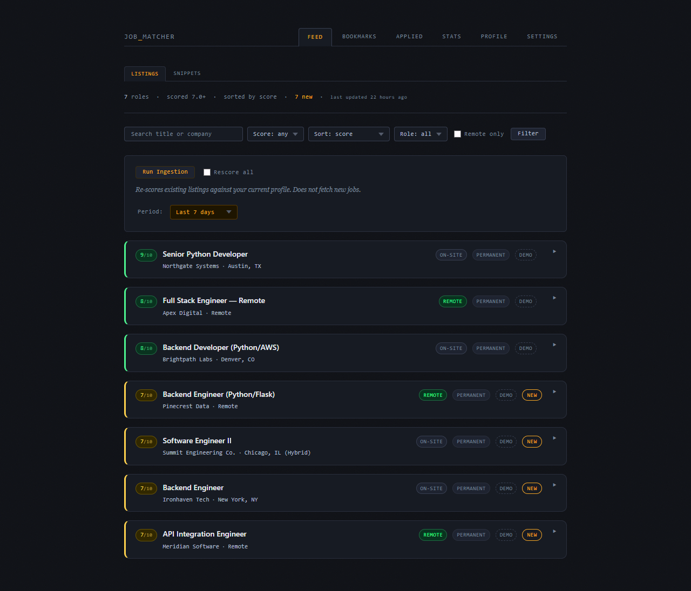
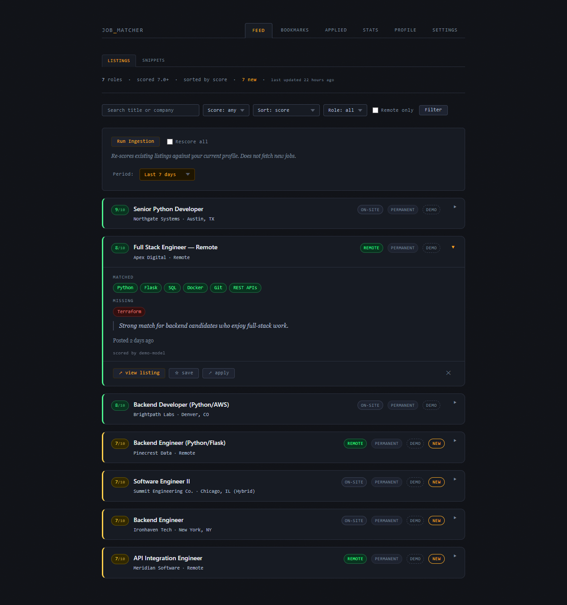
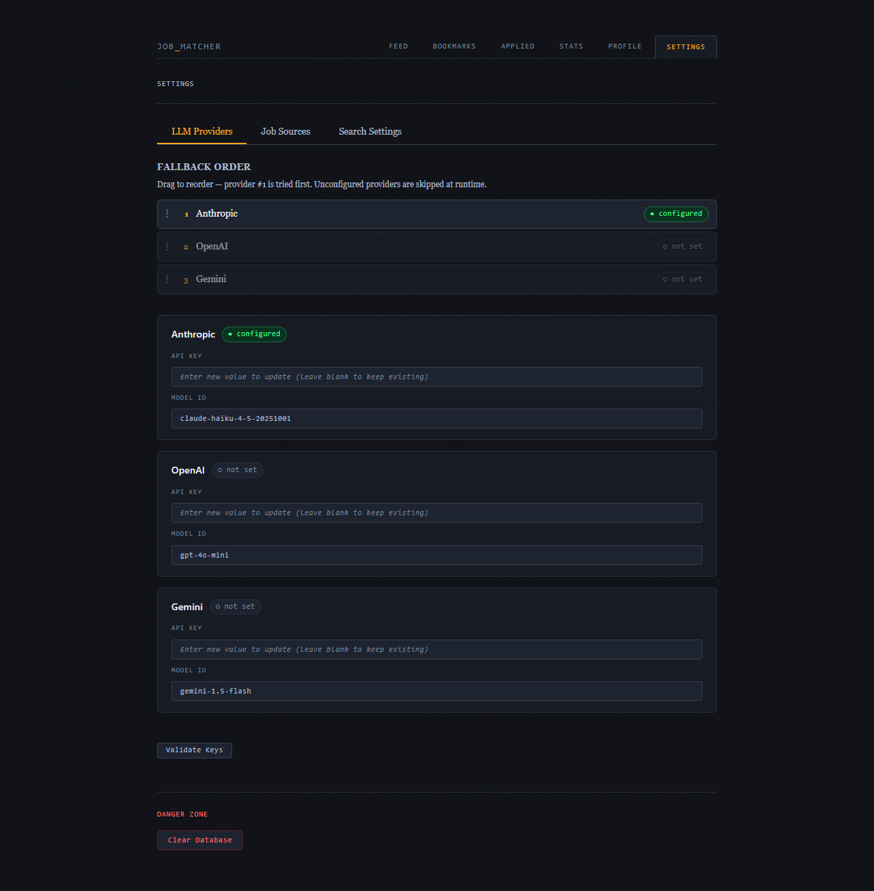

Open source · runs locally · zero SaaS
Stop reading job descriptions.
Start reading scores.
Job Matcher is an open-source pipeline that fetches listings from nine job boards, scores each one against your skills using an LLM, and surfaces ranked results in a local web UI. Your data never leaves your machine.

The problem
The job search is broken
You are the filter.
Job boards dump hundreds of listings on you and expect you to read every one. Most are irrelevant. You know within ten seconds, but those seconds add up.
Descriptions lie by omission.
A posting says "Python" but buries the real requirement — five years of enterprise Java — in paragraph six. You only find out after applying.
Matching algorithms miss what matters most.
LinkedIn and Dice try — but they match on job title and location, not your actual skills or hard requirements. A role requiring three years of React experience has no business in a backend engineer's feed.
How it works
Three steps. Zero manual scanning.
Fetch
Pulls listings from Adzuna, Jooble, Jobicy, Himalayas, USAJobs, Remotive, and more. Pre-filters by title, salary, location, and contract type before anything hits the LLM.
Score
Sends each full job description — not the snippet — to Claude, GPT-4, or Gemini alongside your skills profile. Returns a 0–10 score, matched skills, missing skills, concerns, and a one-sentence verdict.
Review
Browse a ranked feed in your browser. Expand any card to see the full breakdown. Bookmark, dismiss, or mark as applied. Everything runs on localhost.
Features
Your model. Your keys. Your criteria.
Most tools hand your search to their AI, charge their own rates, and write their own prompts. Some will even apply for you — blasting your resume to hundreds of listings without your review. Job Matcher does neither. It surfaces ranked results and leaves the decision to you. You choose where your resume goes.
Nine job sources
Aggregates from Adzuna, Jooble, Jobicy, Himalayas, USAJobs, Remotive, RemoteOK, Arbeitnow, and The Muse.
Bring your own key
Works with Anthropic, OpenAI, or Google Gemini. Use whichever LLM you already have access to. Provider failover is automatic.
Runs locally
No SaaS, no subscription, no data exfiltration. Your resume, your API keys, and your job search stay on your machine.
Smart pre-filtering
Title patterns, salary floors, contract type, and geospatial distance filters run before the LLM, saving tokens and money.
Scored, not just listed
Each listing gets matched skills, missing skills, flagged concerns, and a plain-English verdict alongside its score.
Schedule and forget
Set up a cron job or Windows Task Scheduler task and review fresh results every morning.
Why I built this
Yes, other tools do this. Here's why I built it anyway.
Tools like Huntr, Teal, and Sonara exist. Some will even apply for you. I didn't want any of them.
I didn't want a bot blasting my resume to hundreds of listings without my review. I didn't want to pay hundreds of dollars a month for a service that uses its own models, its own prompts, and makes decisions on my behalf. And I couldn't find anything that gave me the control I was looking for — over the AI, the criteria, and ultimately where my resume went.
So I built it. The learning was a bonus. The tool is something I use every day.
One more thing worth saying: this project was built with Claude in under a week. Part of the learning was the job search problem itself. Another part was working out how to use AI tools effectively in a real development workflow — not as a shortcut, but as a collaborator. The code is mine. The speed wasn't.
Screenshots
See it in action


Quick start
Running in under two minutes
git clone https://github.com/cbeaulieu-gt/job-matcher.git
cd job-matcher
uv venv && source .venv/bin/activate # Windows: .venv\Scripts\activate
uv pip install -r requirements.txt
Copy the example configs, add your API key in the Settings UI, and
run python ingest.py. Full setup guide in the README.